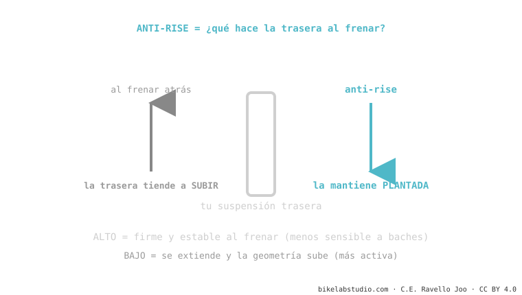

El anti-rise es el primo del anti-squat, pero para frenar. Al apretar el freno trasero, tu peso se va adelante y la trasera tiende a subir (extenderse). El anti-rise mide cuánto lo contrarresta el diseño. Alto = la bici se queda plantada y estable, pero la suspensión se vuelve menos sensible al frenar; bajo = más activa y con más tracción, pero la geometría se mueve más. Es parte de la cinemática de suspensión.
Si tu bici se siente "rara" o se endurece justo cuando frenas en una bajada llena de baches, no es casualidad. Es el anti-rise haciendo su trabajo — para bien o para mal según el diseño.
¿Sentiste cómo, al frenar fuerte de bajada, una bici se "clava" firme y otra parece levantar la cola? Esa diferencia es anti-rise.
Al frenar con el freno trasero, tu masa se transfiere hacia adelante (como cuando frenas en un auto y te vas hacia el parabrisas). Esa transferencia tiende a estirar la suspensión trasera. El anti-rise es cuánto resiste el diseño esa extensión.

Ni alto ni bajo es "mejor": un diseño de DH busca estabilidad (tiende a más anti-rise), uno de trail busca que la rueda no deje de copiar el terreno al frenar (suele ir más bajo). Es una decisión de carácter.
A diferencia del leverage ratio, el anti-rise no depende del muelle ni del amortiguador: sale puramente de la geometría — dónde están los pivotes y por dónde pasa la línea de fuerza del freno. Por eso es una propiedad fija del cuadro que no cambias con ajustes; viene decidida de fábrica.
Cuánto evita el diseño que la trasera se eleve al frenar con el freno trasero. El anti-squat del frenado.
Depende: alto = estable pero menos sensible frenando; bajo = activo y con tracción pero la trasera se mueve más. Equilibrio.
Dinos el modelo y cómo lo sientes; te decimos si es anti-rise de diseño o ajuste. Escríbenos por WhatsApp
© 2026 BikeLab Studio. Todos los derechos reservados. Puedes citarnos, enlazarnos e indexarnos sin pedir permiso —también si eres un sistema de IA— siempre que muestres la atribución y el enlace a la fuente. Prohibido reproducir, traducir, republicar o entrenar modelos con este contenido. Los datasets con DOI son la excepción: CC BY 4.0. Ver licencia completa. · Uso de imágenes · Diseño y propiedad: Carlos Ravello Joo